动态服务器 tomcat🐱
我们来回顾一下 😌
- 下载并运行了静态网页服务器程序apache
- 在服务器的根目录新建了一个网页
- 并在浏览器里面查看
- nginx、apache都是静态服务器
- 有没有什么动态服务器呢？🤔
- 什么是动态服务器呢？
动态
- 用户可以留言
- 可以传图
- 可以传视频的
- 比如
- weibo.com
- 百度贴吧
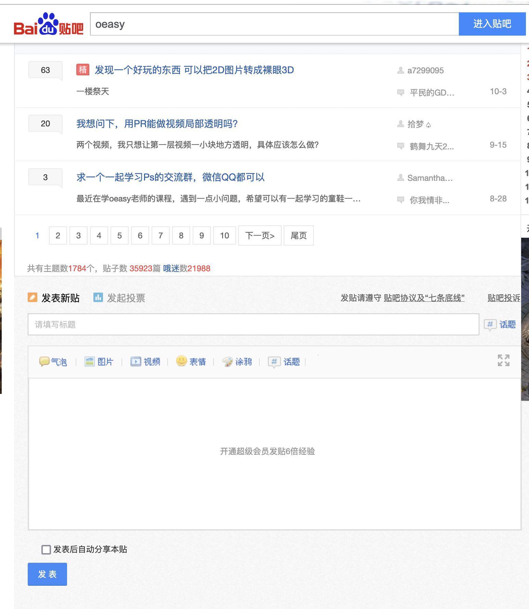
选型
- 我们现在要找到一个动态的服务器
- 也叫做应用服务器Application Server
- 都有什么样的服务器呢？
- https://www.g2.com/categories/application-server
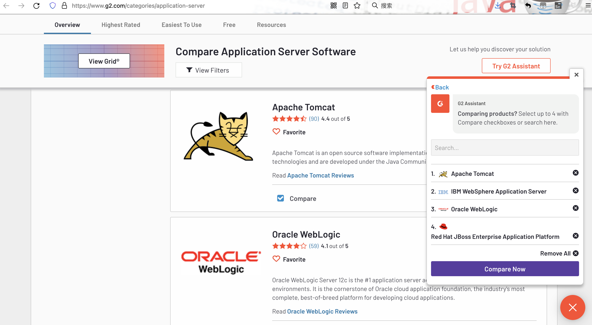
趋势研究
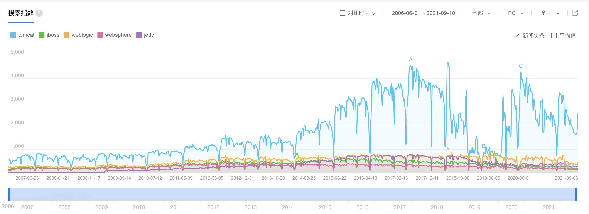
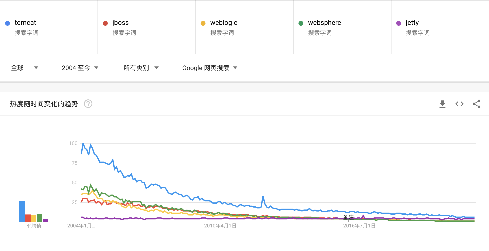
- 百度指数和谷歌趋势都告诉我们tomcat搜索量排名持续第一
市场份额
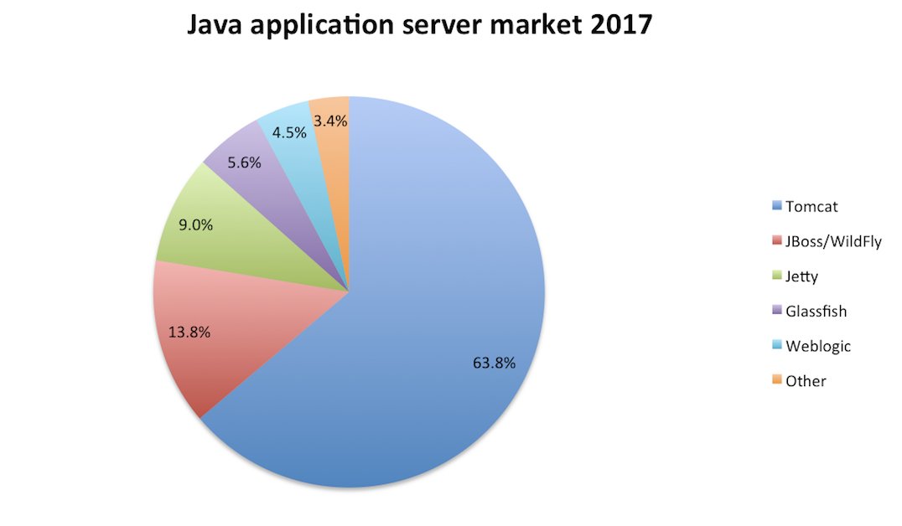
- 市场份额高意味着用的人多
- 学习资料多
- 遇到问题比较好解决
国内趋势
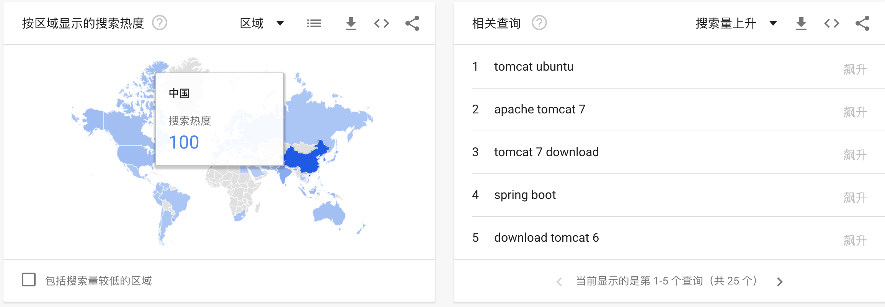
- 可以看到这个在中国最热
- 说明我们可以找到比较多的学习资料
- 就选这个tomcat了
- 那问题也就来了
- 啥是tomcat啊？
搜索
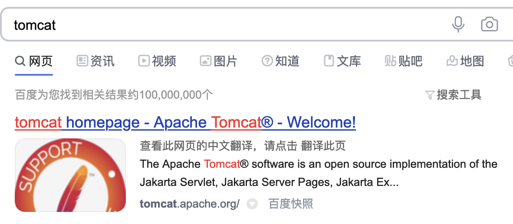
- 这个和apache还有关系
- apache是静态的
- tomcat是动态的
- 静态动态指的是什么呢？
- 指的是网页服务器后台是否运行程序
区别
- Apache httpd Server，是Apache第一款产品
- Apache httpd 具有坚实的稳定性、异常丰富的功能和灵活的可扩展性
- 于是这个产品的名字在用户心中就成了个厂牌
- 1999年6月，为支持Apache HTTP Server以及相关软件的发展
- Apache开发小组成员们成立了一个非盈利性的Apache软件基金会
- Apache Software Foundation
- Apache基金会支持开发了诸多享誉全球的开源软件
- 这些软件的名字前都会加上Apache
- 其中就包括Apache Tomcat
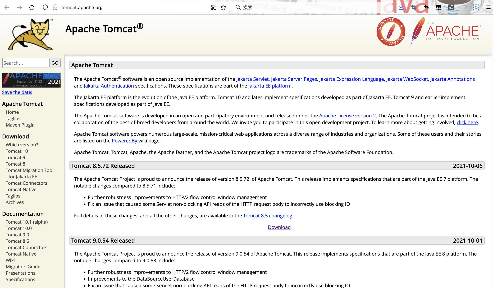
- 可是这名字有点怪啊
- tomcat什么意思？
tomcat
- Tomcat的这个单词的意思是“公猫”
- 开发者姆斯·邓肯·戴维森希望用一种能够自己照顾自己的动物代表这个软件
- 于是命名为tomcat
- Logo兼吉祥物也被设计成了一只公猫形象

- 也有人说是三脚猫
缘起
- 1999年Apache 软件基金会与Sun等其他公司一起合作的Jakarta（雅加达）项目
- 其中中的一个子项是作为服务器的容器支持基于Java语言编写的程序在服务器上运行
- 这样的程序被称为
Servlet - 因为它是运行在
Server上的Applet(应用程序)
- 这样的程序被称为
- 理论上讲这容器并不是一个完整的服务器软件
- 因为最初只能运行Java程序
- 而不能动态生成HTML页面数据
- 也不能处理并发事务
- 开局就是这样的开局
发展
- 可是你别忘了
- appache httpd 是当时静态主流网页服务器
- 从静态其实早晚要升级到动态
- 这个需求其实一直带着tomcat不断发展
- Apache或者Nginx 是
- HTTP Server
- 静态服务器
- Tomcat 则是
- Application Server
- 应用服务器/动态服务器
- Web Server
- 但本质上是一个Servlet/JSP应用的容器
- 我们可以试试这个tomcat么？
- 首先要下载
- 可以把这个tarball下载下来直接解压
- 那个目录就是tomcat
- 可是有好多版本啊
- 下哪个呢？
版本
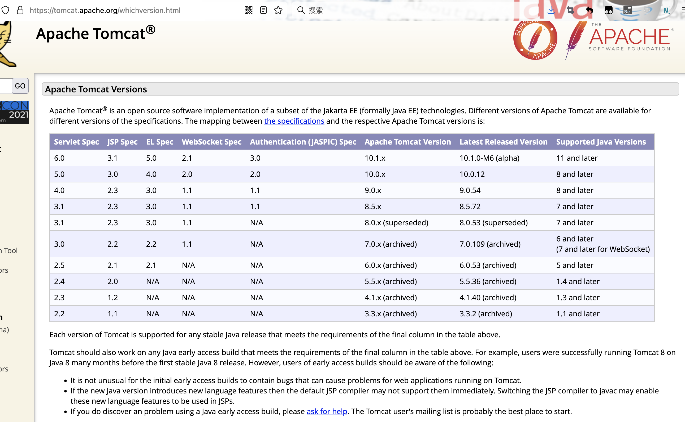
- 新版本支持的东西更多更全
- 新版本要求的java版本更高
- 如果是从零开始
- 可以考虑下载tomcat10
- 本地现在有没有呢？
启动起来
- sudo find / -name "*tomcat*"
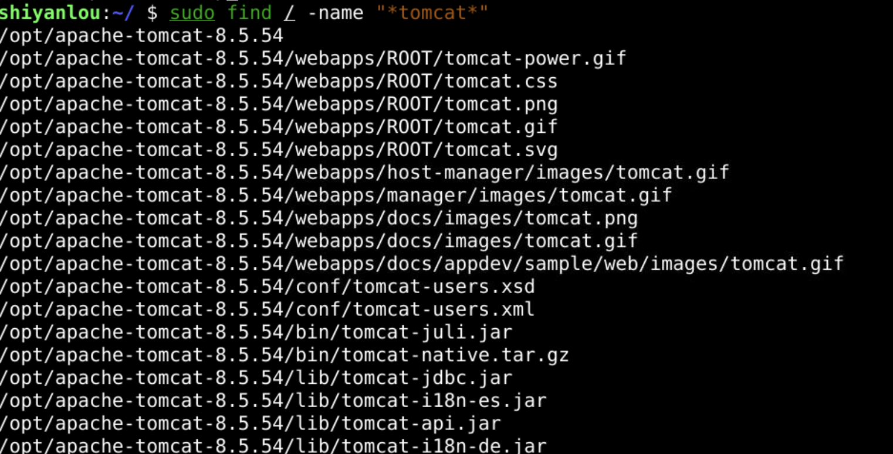
- 可以发现目前机器上有个8.5.54
- 除此之外
- 还可以到源上找一下
apt找一找
- apt search tomcat
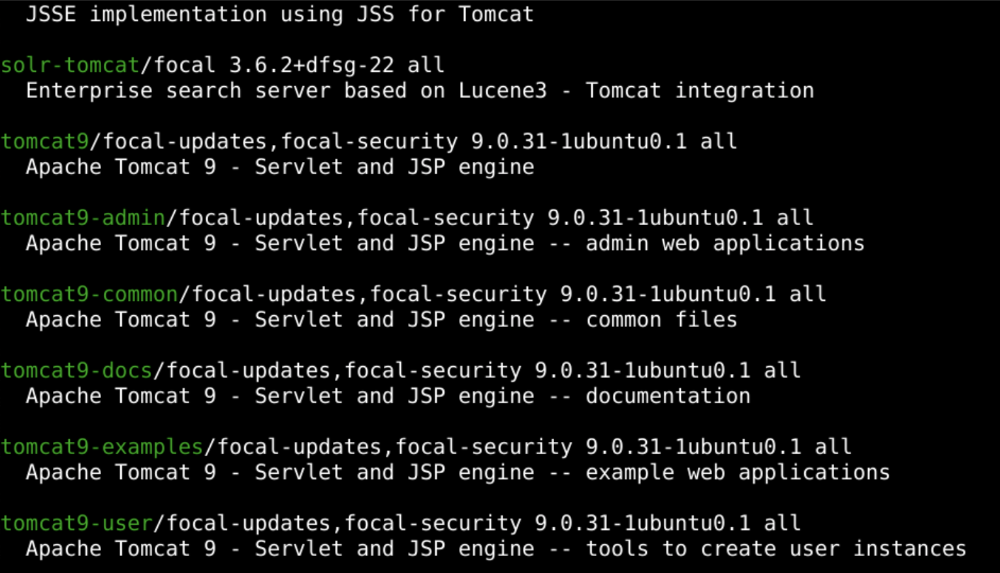
- 是可以找到tomcat9的
- 等等，我可以
- 下载最新版么？
下载
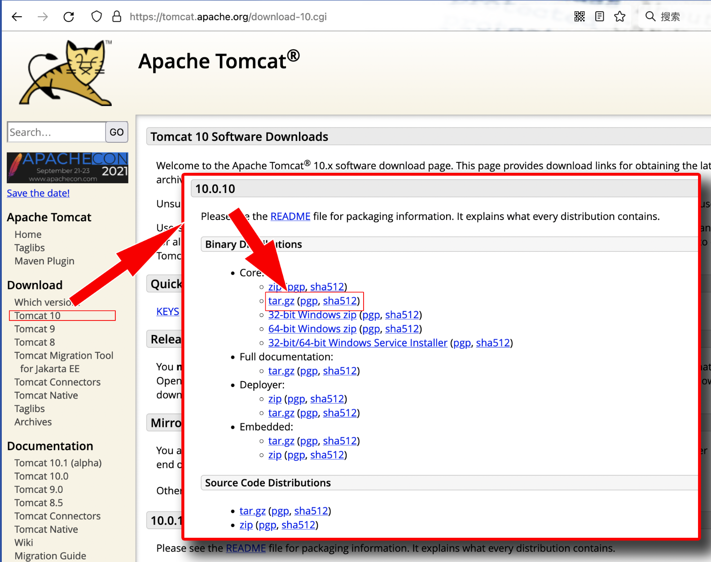
- 如果没有外网的话
- 我上传到了github和gitee
git clone https://github.com/overmind1980/tomcat10.git
cd tomcat10
tar -zxf apache-tomcat-10.0.12.tar.gz
- 如果下载不下来可以试试换个网址
- 现在有三种方式了
三种方式
- 三种使用tomcat的方式
- 用已经在系统里装好的tomcat8
- apt 下载安装 tomcat9
- 网站下载 tomcat10
- 三种方式哪种好呢？
小节
- 如果有现成的
- 先试试能不能用
- 能用就省得下载啦
- 而且一般也是配置好的
- apt下载安装方法
- 首先源上面要有相关的安装包
- 也是可以练练apt下载安装的方法
- 从网站下载的方法
- 下载之后是一个文件夹
- 比较完整
- 而且版本更高
- 直接就能用
- 所有文件都在一起
- 可以练练下载安装的过程
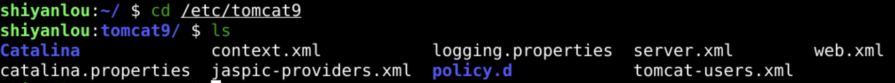
- 不过tomcat10和以前有个小区别
- 一定要注意
tomcat10
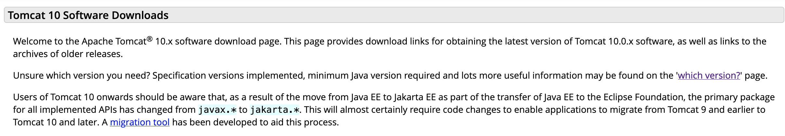
- 原来的包名是javax开头
- 现在tomcat10的包是jakarta开头的
- 为了代码兼容性
- 还是选择最tomcat10吧
总结
- 我们这次了解了应用服务器
- application server
- 他可以动态处理各种请求
- 我们在众多java应用服务器中选择了tomcat
- 了解了tomcat的历史
- 并且学习了下载tomcat的方法
- 还有找到本地tomcat的方法
- 这个东西能不能跑起来呢？🤔
- 下次再说！👋